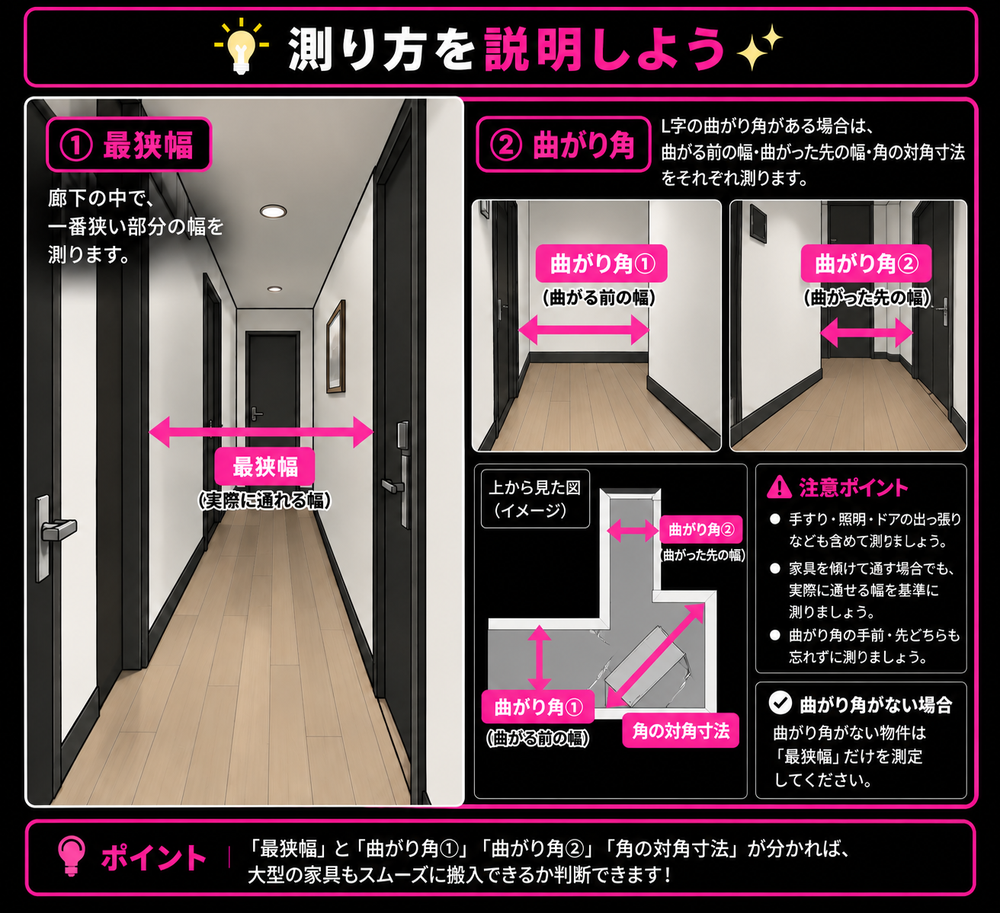
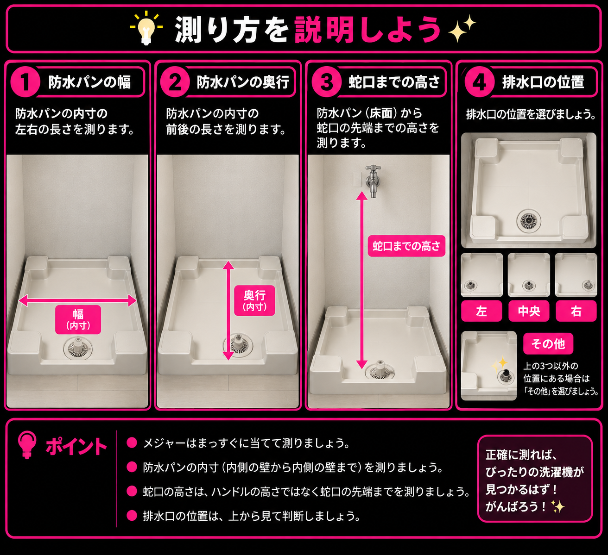
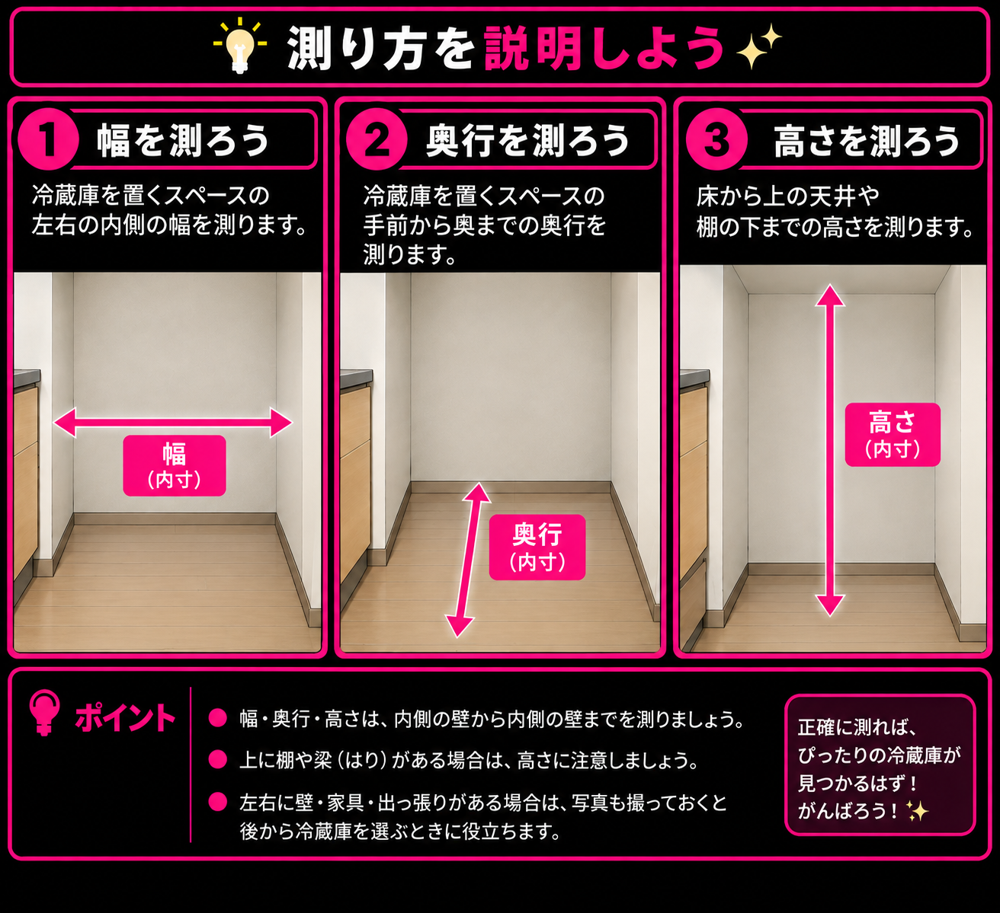

採寸 RPG 📏
by LAFFMAKER
内見で「測っとけばよかった」をなくそう。
QUEST 01

メジャーは持った？📏
採寸の旅にメジャーは必須装備！

不動産屋さんにメジャーを借りられるか
聞いてみよう📏
SELECT MODE
どこまで測る？📏
今日の採寸スタイルを選ぼう。
QUEST 02
玄関を攻略せよ！🚪
大型家具・家電の最初の関門。
ここは測って帰ろう。

QUEST 03
搬入ルートを確保せよ！📦
玄関を突破しても、ここで詰んだら入らない。
搬入ルートをチェックしよう。

QUEST 04
洗濯機置場を攻略せよ！🧺
洗濯機が置けるかは、ここで決まる。
防水パンと蛇口をチェックしよう。

排水口の位置
QUEST 05
冷蔵庫置場を攻略せよ！🧊
冷蔵庫が収まるスペースを確保せよ。
幅・奥行・高さを測っておこう。

QUEST 06
部屋を記録せよ！📸
部屋に入ったら、まずは写真を回収！
撮る方向はLAFFMAKERが案内するぞ。
1 / 6
⬆️ 上を撮影